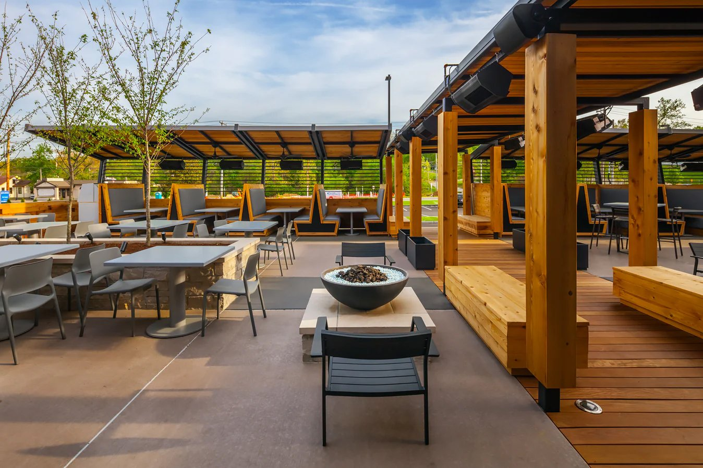
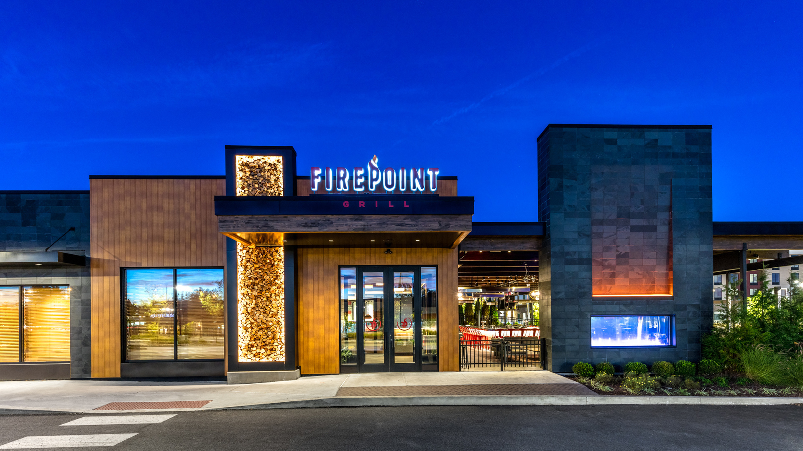

Burgerza opened its doors in 2024 in the heart of Ireland, with a vision to redefine the burger and pizza experience. Our founder, a passionate food lover, wanted to create a place where people could enjoy high-quality, handcrafted burgers and pizzas made with fresh, locally sourced ingredients. From the very first day, our goal was clear: to bring together the best of two worlds – mouthwatering burgers and delicious pizzas – under one roof. What started as a humble, local spot quickly gained popularity, and it wasn’t long before we began to grow. Thanks to our dedication to quality, unique recipes, and welcoming atmosphere, Burgerza has since expanded worldwide. Today, we have locations in major cities across Europe, North America, and Asia, each offering the same level of service and delicious food that made us famous in Ireland. We’re incredibly proud of how far we’ve come and excited to continue sharing our love for food with the world. At Burgerza, we believe that great food starts with the finest ingredients. That's why we work closely with local suppliers to source the best meats, vegetables, cheeses, and dough for our burgers and pizzas. Whether it's the perfect blend of spices for our signature burgers or the crispy, thin crust on our pizzas, every dish is carefully crafted to satisfy your cravings. But Burgerza is more than just a restaurant – it's a place where memories are made. Our restaurants are designed to be casual, friendly, and inviting, with an emphasis on providing a fun dining experience for everyone. Whether you’re enjoying a quiet meal with family, celebrating with friends, or grabbing a quick bite after work, Burgerza offers the perfect spot to unwind and indulge. We’re also committed to sustainability. From minimizing food waste to using eco-friendly packaging, we strive to make Burgerza a responsible part of the communities we serve. Our goal is to not only serve delicious food but also give back to the planet and the people who support us. Join us at Burgerza and experience the magic of fresh, handcrafted food in a vibrant, welcoming atmosphere. Whether you're in Ireland, the United States, or anywhere in between, we’re proud to bring the best of burgers and pizza to your table.
Dublin,Ireland

Burgerza’s journey began in 2010 in the heart of Dublin, Ireland, where our founder set out to create a place that offered high-quality, handcrafted burgers and pizzas in a casual and welcoming atmosphere. The first restaurant quickly became a local favorite, known for its fresh ingredients and unbeatable flavors. Since then, Burgerza has grown from a single Dublin location to becoming a global sensation. With restaurants now open in cities like Istanbul, Turkey, and Barcelona, Spain, we’re proud to bring our unique blend of delicious burgers and pizzas to food lovers around the world. Whether you’re enjoying a meal in our cozy Dublin spot or visiting one of our international locations, you can always count on great food and excellent service. At Burgerza, we’re passionate about creating unforgettable experiences for every guest who walks through our doors, no matter where they are in the world.
Istanbul,Turkey

About Us Burgerza’s international expansion began in 2013 with the opening of our first restaurant in Istanbul, Turkey. After experiencing tremendous success in Dublin, Ireland, we were excited to bring the Burgerza experience to the vibrant city of Istanbul. The new location was quickly embraced by locals and visitors alike, drawn in by our delicious, handcrafted burgers and pizzas made with the freshest ingredients. Istanbul’s unique blend of cultures and flavors provided the perfect backdrop for Burgerza’s next chapter. As with our Dublin location, we focused on creating a welcoming atmosphere where people could come together and enjoy high-quality, flavorful food. The response from the community was overwhelming, and we’ve been proud to serve up unforgettable meals to Istanbul’s diverse and growing population. Today, Burgerza continues to thrive in Istanbul, providing both locals and tourists a place to enjoy the best burgers and pizzas. Whether you’re in the heart of Dublin, Istanbul, or any of our other locations, we remain committed to bringing you the freshest and most flavorful food around.
Barcelona,Spain
In 2016, Burgerza expanded further into Europe with the opening of our vibrant restaurant in Barcelona, Spain. After the success of our locations in Dublin and Istanbul, we were eager to bring our signature blend of handcrafted burgers and freshly made pizzas to the lively city of Barcelona. The unique cultural energy of Barcelona was the perfect match for our brand. With a commitment to quality, taste, and community, Burgerza quickly became a favorite destination for both locals and visitors. Our focus on using the finest, locally sourced ingredients helped us connect with the city's love for fresh, flavorful food. Since opening in Barcelona, we’ve proudly served a growing number of customers who come to enjoy our delicious meals in a welcoming and relaxed environment. From our classic burgers to our gourmet pizzas, every dish at Burgerza is crafted to delight the senses and provide a memorable dining experience.
New York, America
Burgerza’s journey continued in 2019 with the grand opening of our restaurant in New York City. After experiencing tremendous success in Dublin, Istanbul, and Barcelona, we were thrilled to introduce our unique brand of handcrafted burgers and pizzas to the bustling streets of New York.